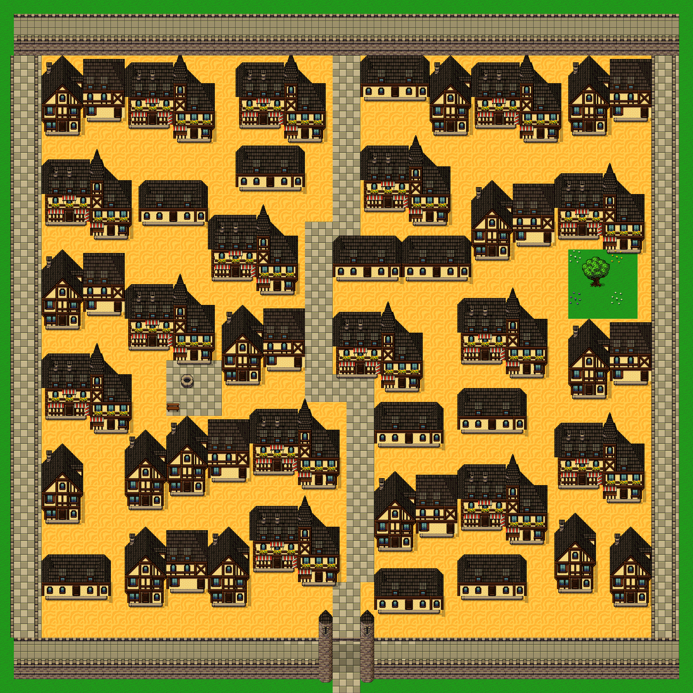
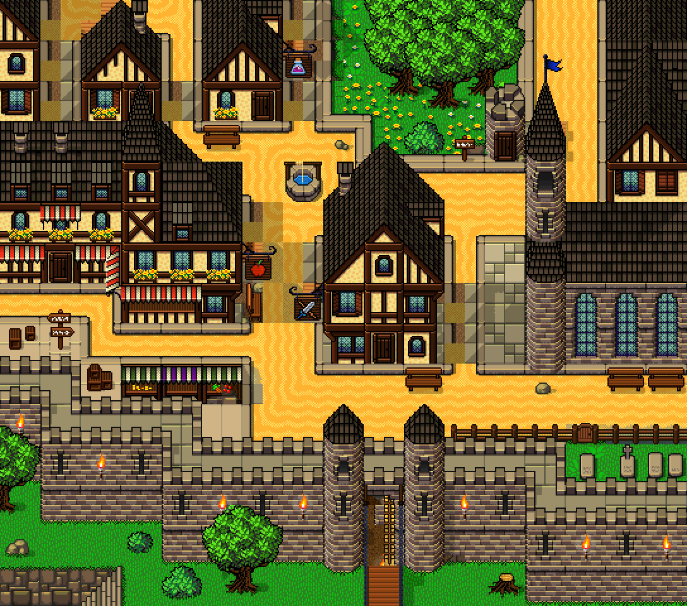
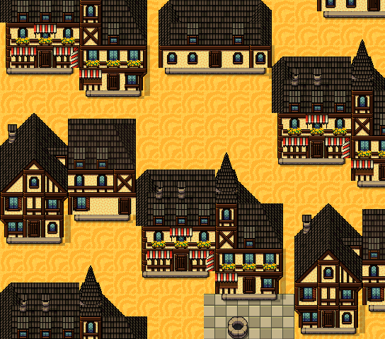
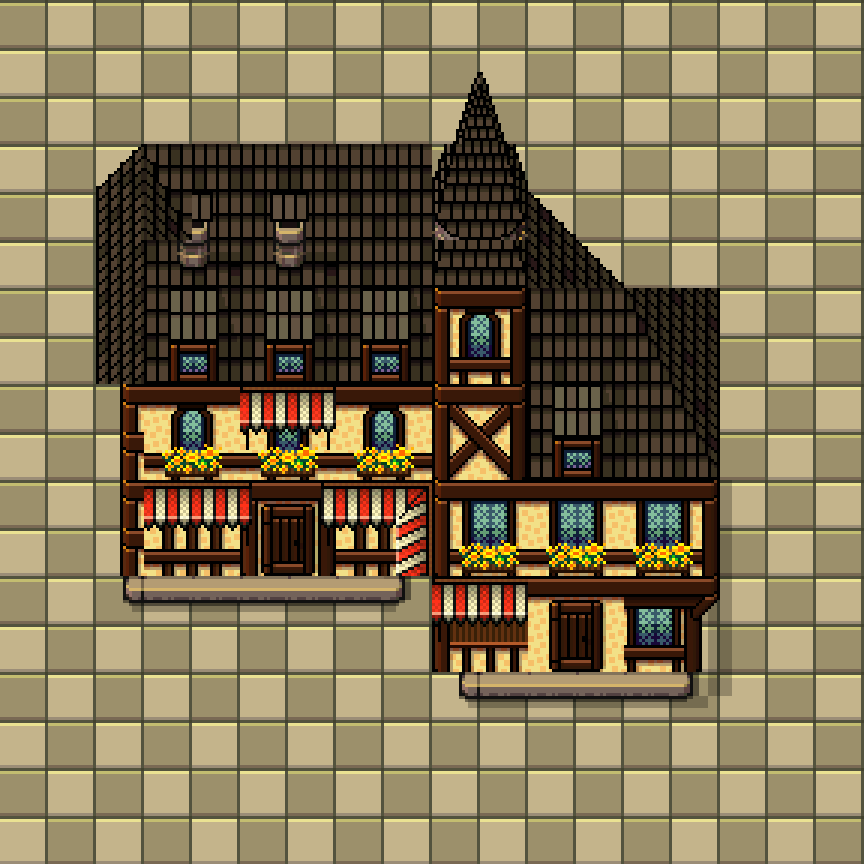
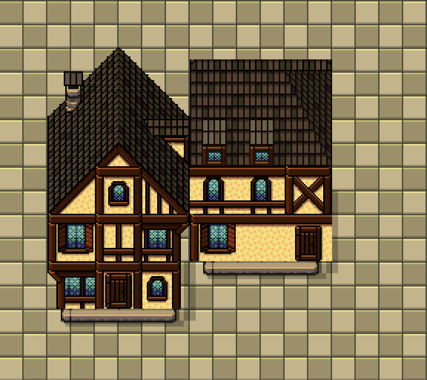
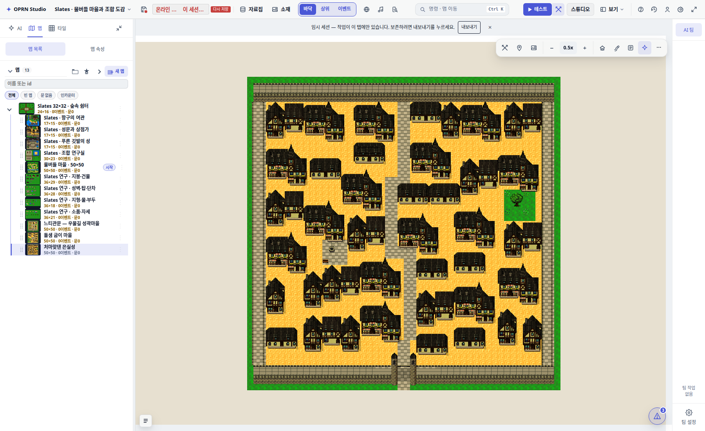
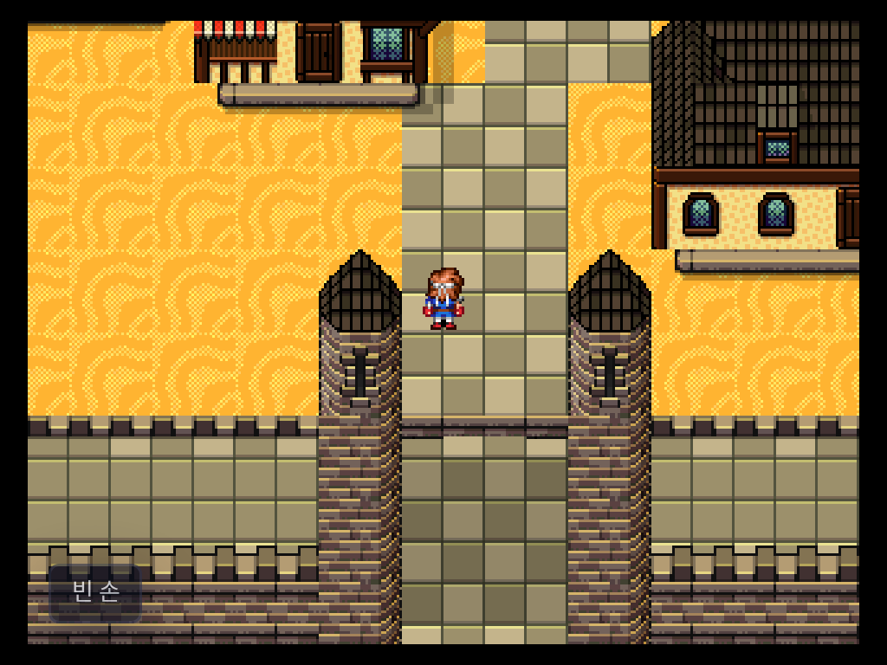

SLATES · DOCUMENT REVISION 3 · GPT 6 ASTRA / MEDIUM집이 골목을 둘러싸는
촘촘한 성곽 마을
50×50칸의 처마맞댄 은실성. 이전의 넓은 공터를 줄이고 건물 40개를 가까이 배치했다. 문서의 밀도 기준을 필수 조건으로 바꾼 뒤 같은 모델에 다시 맡겼다.
28.46 → 52.25%성벽 내부 건축 실루엣
138 → 0곳5×5칸이 모두 열린 위치
40개 · 4형태상점·여관·주택·작업장
밀도는 같은 내부 영역 [3,4,44,42]에서 바닥·그림자·나무·성벽을 제외한 건축 알파 합집합이다. 참고 그림의 수작업 근사치와 직접 비교하는 정밀 통계는 아니다.

새 지도 · 50×50칸 · 32px 타일
같은 17×15칸 범위로 비교하기
참고 그림은 약 17×15칸의 장면이다. 넓은 50×50 지도를 축소한 화면만 비교하지 않고, 새 지도의 세 구역을 같은 범위로 확대했다.

사용자가 제시한 참고 화면
새 지도 · 서쪽 상점 골목 · 17×15칸다음 에이전트가 읽을 문서를 어떻게 바꿨나
- 밀도 50~65%를 필수 조건으로. 미달하면 배치를 다시 만든다. 건물 수나 사각 스탬프 면적으로 대신하지 않는다.
- 길 주변의 모든 빈 땅을 검사. 기본 골목은 1칸, 주거리는 2칸. 우물 공터 4×4·정원 5×5 이외의 넓은 빈 공간을 남기지 않는다.
- 이미 배운 건물의 원본 조립 연산을 재사용. 비교용 패딩을 제거하고 실제 몸통·문앞 좌표로 배치한다.
- 줄 맞춘 배치와 건물 겹침을 반려. 앞선과 길을 꺾고, 창·문·기단이 다른 건물에 잘리지 않는지 확인한다.
- 전체 지도와 확대 세 곳을 함께 제출. 밀도 수치, 원본 출처, 통행, 실제 저장 근거를 각각 남긴다.
에이전트 진입 문서 · 그림 포함 밀도 지침 · 문서·이미지·조립 자료 ZIP
다음에도 쓸 수 있는 조립 자료

높이와 앞선이 다른 붙은 상점
돌출집과 낮은 날개를 잇는 여관모듈 JSON에 sourceRect, destination, 순서, 그림자, 기단, 문 앞 접근, 충돌을 저장했다. 기존 모듈의 일부 지붕 접합 한계는 남아 있으며, 임의 폭으로 늘려도 되는 일반 건축 공식은 아니다.
원본 조각 조립 JSON · 이번 지도 배치 JSON
확인 및 저장 근거
실제 에디터에서 68개 접근 지점·700칸 연결을 확인했다. 성문을 막으면 외곽으로 누출되지 않는다. 남문 밖에서 안쪽으로 실제 이동했고, Supabase와 로컬 SQLite 저장 후 재로드가 일치했다. 원본 1,232슬롯을 보존하고 합성 타일 165개를 추가했다.

실제 에디터
전용 플레이어 · 남문 밖에서 안쪽으로 이동모델은 새 문서와 기존 조립 자료로 배치했으며, 감독자가 중간 그림에 피드백을 주었다. 문서 개정만의 효과를 분리한 통제 실험은 아니다. 이 지도는 외관·통행을 저작한 마을이며 실내·NPC·거래 이벤트는 포함하지 않는다.
실험 기록과 검증 · 독립 밀도 계산 · Supabase 저장·재로드